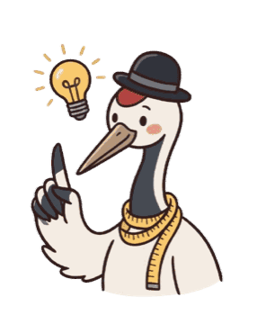
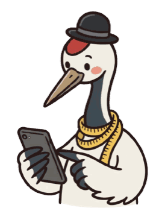
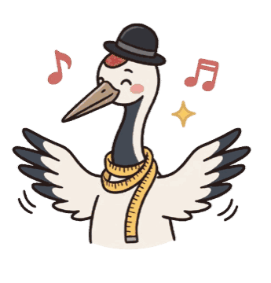
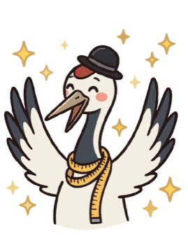
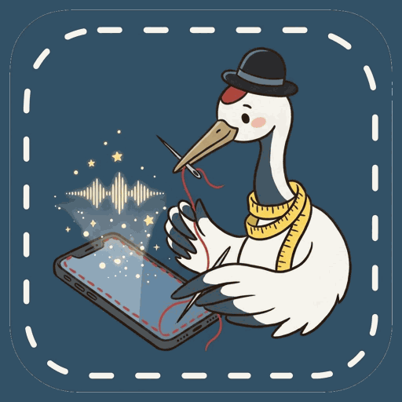
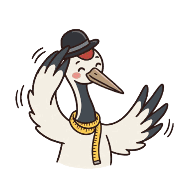

探しても、ぴったりは見つからない。
Not another app. A tool of your own.

One mic. Just say what you need.

「家計簿がほしい」
部品を選んで、方眼に置く
Parts are laid out on a 6-column grid.
「合計をもっと大きく」
Only the part you asked about changes.

タップして話す
最近の支出
Other tools, made the same way.
今日のメニュー
最近のメモ
立て替え
Native features, built in.
Camera
Notifications
Maps
Calendar
Sharing
Share it with family and friends.


Just talk. It becomes your app.
